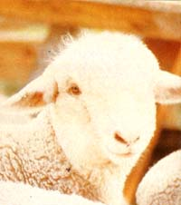
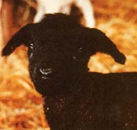
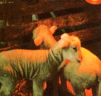
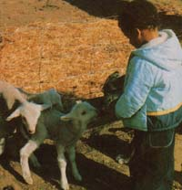
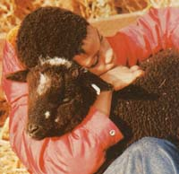
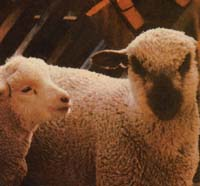
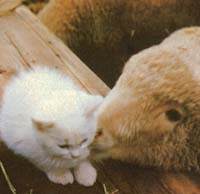

As Paula Simmonsauthor of Raising Sheep the Modern Waysays, it's best (from a moneysaving and experience-gaining standpoint) to "grow" rather than "buy into" sheep, And certainly one of the easiest, most economical ways to get started with the animalsas Daryl Ann Kyle of Athol, Idaho will tell youis to "adopt" an orphan. "
Sheep are wonderful animals: They're terrific meat-, wool-, and manure-producers ... they're easy to tend to (much more so than most barnyard animals) ... and as self-propelled lawn mowers, they can't be beat. Unfortunately for us homesteaders, however, it can cost quite a bundle at today's prices to start even a small flock of woollies, if you try to buy all your animals at once.
Should you happen to live where there are several nearby flocks of sheep, though, orphan lambs (also called "bums" or "bummers" in our neck of the woods) could just be your ticket to meat, wool, and a flock of your own. Orphan lambsyoung'uns whose mothers have either died or rejected them for some reasoncrop up now and then in every flock. Andbecause such animals need more-or-less intensive care in order to surviveshepherds are usually happy to have someone take these special babies off their hands for little or no money. That's where you come in ... providingof courseyou know in advance how to attend to an orphan's special needs.
Traditionally, lambing occurs between January and March of each year, although out-of-season births are becoming more common. To find a "bummer", consult [1] your county extension agent, [2] farmers who've been in the area for some time, [3] local want ads, [4] a sheep extension specialist at a nearby university, and/or [5] feed-store operators. You might find it useful, also, to place an advertisement in a "pennysaver" or other freely distributed tabloid.
When you're choosing a bum, take only the most robust, healthy-looking one(s). A quick check under the tail for signs of diarrhea will help you avoid animals that are scouring. Also, droopy ears are often indicative of a sickly lamb (but take a good look at the, mother, since some breeds have naturally floppy ears). And don't hesitate to ask the owner about the animal's health. I've found most sheep folks to be wonderfully honest, even to the point of refusing to sell an animal that doesn't stand a chance.
By all means do consider a dark or spotted lamb. For a large sheep operation, non-white wool is a detriment ... but to a spinner, tanner, or animal-lover, it's pure luxury!
Critters born too late to follow a traveling flock are good prospects, too. Then again, you just might talk a farmer out of a couple of bummers with the purchase of a mature ewe (if that's what it takes to swing the deal).
The first order of business after you've brought your new woolly home is to keep him/her warm. If the lamb is still damp (we've had some that were that young), dry it with a rag. It's OK to bring bums indoors if the weather outside is particularly bitter (more than one orphan has tottered around our kitchen on its first day) ... just remember, though, that large changes in temperature can adversely affect some animals.
2 One way to warm a cold lamb is to immerse it in tepid water, then gradually increase the liquid's temperature until it reaches 100°F. (The process of warming by progressive increments prevents shock.) Follow with a thorough towel drying of the fuzzy creature and it'll be baa-ing for food in no time.
A lamb-like any other farm mammalneeds a good dose of colostrum (that "first milk" which is so chock-full of vitamins, antibodies, and other goodies, including a natural laxative) if it is to successfully begin life. Ideally, of course, you'll have bought an animal that has already received its first servings of this precious food. But suppose you're saddled with a newborn who hasn't had that warm, comforting, first meal from mama ... what then? In this case, you have three options:
[1] Bottle-feed the animal two ounces of colostrum that you've previously milked from another ewe and kept frozen in ice-cube-sized portions for just such an occasion.
[2] Feed the critter two ounces of cow colostrum every four hours for the first few days. Once, a local sheep farmer who knew we were raising bums gave us a little lamb and said, "This poor critter hasn't had a thing to eat, but I thought you might like to try and save him." When we got the young'un, it was throwing its head back and seemed to be fading fast. I hustled up some bovine colostrum from a nearby dairy and began feeding it to the youngster ... thengraduallyI changed his formula to lamb milk replacer by substituting larger and larger amounts of the reconstituted fluid for the colostrum. (It's important to make feeding changes in small steps.) We didn't have a lot of hope for "Lamby" (as we called the animal) but he lived!
[3] Feed the lamb a nutrient mixture made by combining a hen's egg (beaten), a scant teaspoon of cod liver oil, and a rounded teaspoon of sugar with 24 ounces of milk. (I haven't tried this method myself, but it's given in many of the standard handbooks on sheep-raising, so it's probably worth a try.) This liquid may be refrigerated between servings, but should be fed to the lamb at 90° to 100°F.
After your orphan has been on colostrum a day or two (or three), you'll want to start feeding him/her/it milk of some kind. Obviously, fresh ewe's milkif it were availablewould be the best form of nourishment for your furry youngster. Barring that possibility, you can feed the young'un whole cow's milk, if the cow in question is a rich producer (such as a Jersey or Guernsey) or whole milk to which cream has been added if your bovine "donor" is not a rich producer. Just how much cream you should add is something I can't tell you, since the butterfat content of milk varies greatly from cow to cow. We, however, usually add a teaspoon or two of cream to every couple ounces of milk.
You can also feed your orphan "lamb milk replacer", which is made by Land O-Lakes and a number of other companies. Many sheep people swear by the Land-O-Lakes product, and we've fed it with success ourselves. In a pinch, we've also used regular calf milk replacer mixed in the recommended proportion (although some sheep experts frown on this practice).
In addition to milk, you'll want to provide your baby woolly with fresh water in a small container. (Your youngster may get all wetand risk being chilledif he or she is allowed to drink from a large container.)
You won't need much in the way of special equipment to feed your new pet. All you have to do is buy a lamb nipple from a feed store (or through a farm supply catalog) and slip it onto a pop or other small-necked bottle.
You should know, however, that orphans are often reluctant to start nursing rubber nipples (particularly if they're weak from lack of food). In such a case, it becomes necessary to administer small sips of milk (or colostrum) to the animal's mouth with a plastic, disposable-type syringe.(I like to use the skinny 3-cc kind that can be washed and re-used. You'll find a wide variety of syringes at the local feed store or veterinary supply house.)
When feeding your bummer with a syringe, advance the plunger just a bit at a time (to simulate the slow flow of milk from mama's nipple), and allow the baby to swallow regularly to avoid having any fluid run down its windpipe and into its lungs (a sure invitation to pneumonia).
Occasionally, the animal simply won't be very hungry at a given feeding session and will suck fine by the next feeding. Hungry or not, though, it's best to try to give the lamb its food. The baby may not want a full two ounces at first, but within a short time it'll begin to finish your offerings enthusiastically.
In the interest of good hygiene, remember to cleanse all bottles, nipples, syringes, etc., thoroughly and regularly between feedings.
Begin feeding your orphan two ounces of liquid (colostrum or milk) every four hours for about a week. Late in the first (and throughout the second) week you can increase the ration of milk to three, then four ounces per meal. Also, during the second week you should adjust the feedings to one every six hours, then one every eight. (Be sureas you begin to decrease the number of feedings per daythat you do not decrease the total amount of milk given in each 24-hour period ... unless the little bleater becomes scoury.) After the second week, the daily milk allotment can be increased to between 24 and 32 ounces.
Recent research indicates that no additional benefit is gained by bottlefeeding a lamb more than twice daily after the first week. I prefer, however, to wait until the third or fourth week to institute the 12-hour schedule. I might add that commercial raisers of orphans have had considerable success feeding cold milk replacer on a free-choice basis to their lambs. (In this case, a large container holds the liquid and numerous nipples are provided. Also, care is taken to keep the milk replacer cold to prevent the lambs from overfeeding and developing scours.)
Bear in mind that it's betteras a ruleto underfeed than to overfeed. If rations are kept on the skimpy-but-adequate side, the worst that can happen is that your animal will grow a bit more slowly. If your "bottle baby" is allowed to over-indulge, on the other hand, he/she may develop scours (dysentery) and die. (For more information on the prevention and treatment of scours, refer to the accompanying sidebar, "White Scours: What It Is and What You Can Do About It".)
Lambs may be weaned at four to six weeks of age if they're eating dry food (leafy hay, crushed whole grains, or commercial lamb creep feed) well. We prefer to continue milkfeeding our woollies for about three months, however. After trying a variety of methods, we've settled on giving our lambs whole oats, trace-mineralized salt, and good-quality hay with their ration of milk from the third or fourth week on.
We've found that once lambs have been weaned, they'll grow adequately on pasture or hay plus the two (repeat, two) essentials salt and water. Large-scale sheep farmers encourage faster growth by the use of added grain and the routine feeding of antibiotics ... but those of us who aren't so concerned with a hurried return on our investment will be able to butcher a delicious lamb (or add a healthy ewe or ram to our breeding flock) in six or eight months by following a less intensive, antibiotic-free feeding regimen.
Lambs can be pastured freely as long as no wild dogs, coyotes, bears, etc., are lurking nearby. If you happen to be raising cattle on your land, so much the better. (I've read that shepherds used to train their young steers to be "watch bulls". First, they'd put a cow and a calf in a field with some sheep. Then, any time a predator came into the foraging area, the cow would rush to defend her calf and chase the intruder away. When steers were allowed to feed in the same patch, they would soon begin to imitate the cow and revel in their job of keeping the field predator-free ... thus, they became "watch bulls".) We allow our sheep to graze with several head of cattle, away from wooded areas, and have notso far, anywaybeen bothered by predators.
Sheep are notably fine foragers. Their hay-eating habits, however, are atrocious! The critters will pick out all the leaves and leave the stems behind, every time. You'll be way ahead of the game to feed leftover stems to your horses, cows, or compost pile, becausebelieve meyour woollies will be bleating bags of bones before they'll consume any stems themselves. If you have a way of chopping or grinding hay before you give it to your sheep, do it: Folks around here say you can expect at least 20% better utilization of the fodder that way.
Lambs, incidentally, also enjoy garden gleanings: cornstalks, bolting lettuce, uprooted weeds, turnips, etc. In addition, sheep relish tulip blossoms, chives, lilac greenery, rhubarb (our woollies eat the poisonous-to-humans leaves with no apparent difficulty), the leaves of tender young fruit trees, maple (and other deciduous tree) leaves ... even the newly budded growth of the normally sticky spruces. (Do you get the idea that this is some kind of a warning?) The point, of course, is: If you have any plants anywhere that you don't want eaten ... keep your woollies well away from them!
Good housing and disease prevention go hand in hand. Start by giving your animal (s) a draftfree pen. (It needn't be very big ... 15 square feet per lamb will do.) As long as the little bleaters don't suck each other, more than one orphan can be kept in the same quarters. It's true that-from a health standpointindividual stalls are best ... but togetherness ensures additional warmth.
You say you've only got a rickety, drafty old shed? Tack cardboard up or pile bales of hay or straw three feet high along the structure's walls to keep out the cold winter winds. (Bales make marvelous insulation.)
During our rigorous Idaho winters, we provide our orphans with an infrared heat lamp for their first two weeks of life. Of course, we have to be doubly careful to see that the light fixture is out of the bummers' reach, securely fastened, and electrically safe, since fires can start all too easily in bedding.
And speaking of bedding, straw is what you want for lambs. Wood byproductssawdust, chips, etc.work well as an insulating underlayer, but will get into wool and make the fleece difficult to clean for spinning. The use of several inches of strawand straw aloneeliminates this problem.
Where we live, canine curs are the number one sheep predator. If packs of dogs roam your neighborhood, you'd best pen your babies inside a barn or other closed structure where hounds can't get near them. And if lambs are a new type of critter for your own dog, introduce Bowser to the woollies and keep an eye on him until he understands that they're to be guarded ... not eaten.
Among sheepherders there's a saying that "a sick lamb is a dead lamb". Some people feel that woollies are just more prone to "give up the ghost" than other farm animals when they fall ill. Be that as it may, it's been my experience that close and frequent observation (including regular checks of body temperature to see that it's within a degree of 102.5'F), the use of adequate disease-preventive measures, and prompt diagnosis and treatment of illnesses when they do arise can go a long way toward keeping orphan lamb mortality down.
Newborn sheep come into this world with little or no ability to combat disease. (As you know, the infants are totally dependent on their mother's colostrum for what disease fighting antibodies they do have.) Thus, you may wishdepending on how you feel about the use of antibioticsto give your newborns shots of a broad-spectrum antibiotic as a preventive measure. [EDITOR'S NOTE: You may find it helpful to review Linda Martin's article, "How to Give That First Injection", in MOTHER NO. 43, page 90a.] We do this for all our less-than-a-week-old orphans to prevent the onset of pneumonia and other infectious diseases. If you go this route, be sure to sterilize your needle and syringe by boiling (unless, of course, you're taking them out of the package for the first time, in which case they'll already be sterile) and carefully follow the directions that come with the medication.
If your lambs have not received enterotoxemia vaccine (to prevent overeating disease), buy some from your veterinarian or veterinary supply house and administer the vaccine to the animals. (We lost two of our first eleven orphans to overeating disease before we knew there was a vaccine against it.) And do make sure you give the proper dosage in the proper manner. Enterotoxemia vaccinelike many other vaccinesmust be given subcutaneously (just under the skin), as opposed to the more familiar intramuscular route. (You'll find a non-woolly patch of flesh, perfect for subcutaneous injections, on the lamb's chest right behind either front leg.)
Disease-prevalence patterns vary from one part of the country to the next. For that reason, you should check with your veterinarian or county agent for a listing of the sheep vaccinations that are recommended in your locality. (Vaccination against sore mouth, for instance, is advisable for sheep in some regions of the U.S., but not in others.)
Here in northern Idaho, the soils are deficient in selenium (an important trace mineral) ... thusto prevent white-muscle diseasewe give our animals shots of BO-SE (a commercial preparation containing selenium and vitamin E). Unless you live in an area that's known to be deficient in selenium, however, you shouldn't administer these shots to your animal (s).
Which kinds of control measures you should use for external and internal parasites in your breeding stock depends on the degree of infestation in your area. The most ecologically sound control, of course, is good management ... which means (among other things) frequent pasture rotations and regular cleaning of the animals' quarters.
If the worst should happenif you do lose an animal to diseaseby all means discuss the circumstances surrounding the death with your veterinarian. (Autopsies are helpful in some cases ... although here, you'll have to weigh the cost of the operation against the possible benefits.) Your vet can advise you as to the probable cause(s) of death and the preventive steps to be taken next time.
Lambs' tails should be shortened ("docked") within a few days of (but no later than a couple weeks after) birth to prevent serious accumulations of manure on their tails later. The operation can be performed in any number of ways. We simply [1] I grasp the tail about an inch from the base, [2] pull the appendage's loose skin toward the animal's body, [3] lop the tail off with a sterile knife, then [4] slip the skin over the tail stub and apply pressure as needed to stop the bleeding. Shortly thereafter, an antiseptic (such as 7% iodine) is applied to the stub to prevent infection.
If you're raising your sheep in confinement, it's probably a good idea to administer tetanus antitoxin (not tetanus toxoid) to your lamb(s) at docking time. You can buy tetanus antitoxin at the nearest veterinary supply store. (Again, carefully follow label directions.)
If you need help with docking, ask the folks you buy your bummers from for a demonstration. The procedure isn't as difficult as you might think.
Ram lambs that are kept for meat do not need to be castrated as long as they're separated from the ewes when they're three to four months old (or whenever they begin to take an interest in breeding the females). In fact, your rams will actually grow faster if they're not castrated, and their meat will taste the same as that of wethers (castrated males) if it is eaten young (say around six to eight months of age). I should warn you, however, that ram lambs are often discriminated against in the marketplace. Thus, if you're planning to sell your meat ''on the hoof", it might be-hoove you to castrate the male sheep destined for market. (Any of the books listed in the accompanying sidebar, "Help for the Small-Scale Sheepherder", will tell you how to perform the operation.)
We were able to buy day-old bummers for $5.00 each (when they weren't given to us for free, that is) back in 1973 ... and in 1975, we bought one- to two-week-old orphans for $15 apiece. Prices, however, are in general much higher now. Lamb is in great demand at present, breeders are trying to bring every animal to market, and the commercial raising of orphans has become more common ... all factors contributing to runaway lambflation. (Not that it matters to us anymore: This year, we're the owners of six well-mothered lambs from our own four ewes!) Still, low-cost orphan lambs can be found. You just have to hunt for them, that's all.
Feeding expenses are minimal with bummers. Milk replacer runs about $8.00 or $9.00 for a 25-pound sack, and one young animal consumes about 20 to 25 cents worth a day. Oats (a good single-grain feed) cost approximately $6.00 per hundred pounds ... figure on 3 cents per day per animal. (Depending on your climate, growing conditions, and budget, you may find it feasible to feed your lambs corn, wheat, barley, and/or other grains, too,)
If you're like us, you shouldn't have any trouble bartering goods or services for several bales of fragrant, leafy hay now and then. (We've picked up broken bales in a field, for instance, in exchange for a couple packages of lamb chops.)
Add it all up and you can see that the total cash outlay involved in buying an orphan lamb and bringing it to butchering weight is pretty darn low: anywhere from zero to $20, depending on your resourcefulness. For an animal that provides you with [1] wool, [2] high-grade manure, [3] a well-mowed lawn, and [4] companionship in addition to meat ... that's quite a bargain.
[1] Valuable sheep-raising advice is available from your county agent, university sheep extension specialist, veterinarian (and/or the nearest veterinary school, if you have one), and lastbut in no way leastlocal sheep farmers. Don't be afraid to call on any of these folks. They're all usually glad to be of service.
[2] You may find it helpful to use a calendar as a record book. Jot down dates of birth, feeding changes or schedules, disease symptoms (and types of treatments and vaccinations), weights, etc. (Weight records come in handy when you're trying to select breeding stock with good growth characteristics.) You may also wish to tally your expenses in this manner.
[3] Be prepared. Before you take delivery of one or more orphans, have bottles, nipples, syringes, needles, medications, etc., on hand and waiting. (If you have access to sheep or cow colostrum, pop some into the freezer.) Construct a serviceable pen-and buy your heat lamp-before the critter(s) arrive(s). (You might want to keep that bulb in the package until it's needed, though, in accordance with Kyle's Law, which states: "If an infrared bulb is out of its box waiting to be used, it will somehow get broken. ")
Orphan lambs are fragile creatures, but they're delightful "people" to have around ... and they're not nearly as difficult to take care of as some folks imagine. Give lamb-raising a try, and I think you'll agree with me that orphans aren't really "bummers" at all ... they're real winners!
You'll find additional information on sheep raising in Robin Rye's excellent article, "Life With the Woolies", in MOTHER NO. 23, pages 3034. The Editors.
White scours is a dysentery-like malady that canand frequently doesafflict lambs and calves within their first few weeks of life. (There's also a black scours which affects cattle and sheep of all ages.) Any upset-including a trip through a sale yard, sudden change of diet, exposure to diseased animals, or overfeedingcan bring on the ailment.
The symptoms of white scours are fourfold. They include:
[1] Elevated temperature. For a lamb, that means anything over 102.5°F.
[2] Runny, lightcolored feces. (Healthy young lambs have yellow manure whichwithin a week after birthchanges to a normal brown color.)
[3] General weakness, characterized by an inability to stand up, lack of alertness, and disregard for food or drink.
[4] Increased susceptibility to secondary infections, such as pneumonia.
Bringing scours under control is a matter of giving the afflicted animal ample fluids to counteract the dehydrating effects of diarrhea, and administering antibiotics (e.g., neomycin) to eliminate the offending bacteria from the animal's digestive tract. It's also largely a matter of crossing your fingers and hoping for the best.
Over the years, I've lost a number of beautiful animals to scours ... so I speak from harsh experience when I offer the following tips, hints, and observations regarding the prevention and treatment of this affiction:
[1] Buy your lambs from individual farmers (rather than auctions) whenever possible, and quarantine all newly purchased infants for at least a month ... especially if they've been through a sale yard. Auction pens breed a multitude of disease organisms that can easily be transmitted on the animals' feet.
[2] Some folks believe that scours "gets in the barn". I agree. When an outbreak of the disease occurs, it can be very helpful to move all animals to new quarters. The former area can then be cleaned, disinfected, and allowed to sit vacant for several months before animals are reintroduced into it.
[3) Take the temperature of any and all scouring animals on a regular basis ... and if you happen to notice a fall in temperature, call the vet immediately. In my experience, a falling body temperature means the afflicted animal is fading fast.
[4] Remember that when you take a stool sample to a lab for a culture and an antibiotic sensitivity test (that is, a test to determine which antibiotics can "knock out" the bacteria in the lamb's intestinal tract), the results of the test will be unreliable if the diseased animal was receiving antibiotics at the time the stool sample was collected. Collect a small amount of manure before you begin to give drugs to your scouring woolly (and store the manure at a low temperature ... around 40°F). Thenif the antibiotic you give your lamb fails to do the jobyou can submit the alreadycollected stool sample to a lab and learn the results of a reliable sensitivity test.
[5] Don't give tetracycline antibiotics (Terramycin et al ) to any animal that's being fed milk. (Calcium interacts with tetracyclines to reduce their effectiveness.) Instead, administer sulfa drugs or a broad-spectrum antibiotic, such as neomycin. (Neomycin is excellent for treating scours, but bacteria very quickly become resistant to it if the drug is not used properly. Ask your veterinarian for advice on how much of this antibiotic to administer, and how frequently ... then follow that advice to the letter.)
[6] Over-the-counter anti-diarrhea medications meant for humans are sometimes useful in treating animals with scours. (My friend Theresa administers 6-cc doses of Kaopectateonce per feedingto her scour-ridden lambs using a small, needle-less plastic syringe.)
While I've had some miraculous successes in treating animals with scours, I've also cried a good many tears for those critters I've lost to the disease. (The sad fact is that around 90% of all lambs and calves that develop a fullblown case of scours die.) Out of each experience,though, I've gained additional knowledge. And my fastest learning has come through tragedy.
Here's hoping that you'll be able to prevent most cases of scours in your lambs before they arise ... and that you'll be able to cure the few cases that you couldn't prevent.DK.
All of the following titles can be obtained from any good bookstore ... and all except for book number three can be ordered by mail from Mother's Bookshelf, P.O. Box 70, Hendersonville, N.C. 28739. (Do remember to enclose 75 cents for postage and handling if you order by mail, though.)
[I] Herbal Handbook for Farm and Stable by Juliette de Bairacli Levy (Rodale Press, 1976). Paperback. $3.95. This book has been used faithfully by England's organic farmers since it first appeared in that country in 1952. It includes herbal remedies for ailments that afflict sheep, sheep dogs, goats, cows, horses, poultry ... even bees!
[2] Raising Sheep the Modern Way by Paula Simmons (Garden Way, 1976). Paperback. $5.95. The author-who's raised woollies herself for more than 20 yearsdescribes every conceivable aspect of small-scale sheep management in this book. Contains a separate chapter on orphan lambs.
[3] The Sheepman's Production Handbook (Sheep Industry Development Program, Inc., 200 Clayton St., Denver, Colo. 80206). $12.50. Well worth the price if you're thinking of growin more than just a few sheep for personal use. Covers genetics, reproduction, health, nutrition, management practices, and marketing.
[4] The Shepherd's Guidebook by Margaret Bradbury (Rodale Press, 1977). Hard cover. $7.95. An excellent all-around guide to the art of raising woollies, with a section on orphan lambs. Notable for its chapters on wool and sheepskins, preparing sheep for show, and home butchering.
In addition to the foregoing reference works, you might find Sheep Breeder and Sheepman magazine ($5.00 per year12 issuesfrom Livestock Services, P.O. Box 796, Columbia, Mo. 65201) worth reading. It contains articles about all facets of the sheep industry, and resource information concerning breeders of registered animals.
Another exceedingly useful (in my opinion) journal for the small-scale sheepherder is The Idaho FarmerStockman. (A year's subscription20 issuescosts $5.00 if you live in Idaho, Utah, Oregon, Washington, Montana, or Wyoming ... $8.00 if you reside elsewhere. Write to Suite 101, 413 W. Idaho St., Boise, Idaho 83702.) Although the publication is agribiz-oriented, it doesnonethelessoffer a wide variety of articles of interest to the small-livestock producer, homemaker, and gardener ... and the editors don't shun "organic" methods.
Finally, there's The Shepherd (which bills itself as the National Journal of Sheep Production and Management). This little magazine is jampacked with well-researched, readable, helpful articles for both large- and small-scale sheepherders ... and at $4.95 per year (12 issues), the price is certainly right. Make your remittance to The Shepherd, Sheffield, Mass. 01257.DK.
|
 |
 |
 |
|
 |
 |
 |
|
 |
|
|